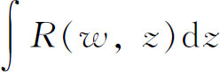
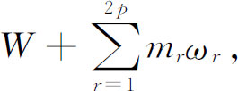
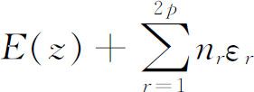
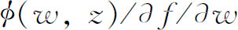
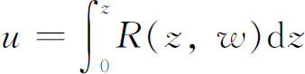
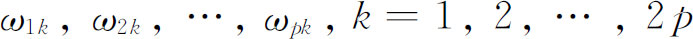

9．阿贝尔积分与阿贝尔函数
黎曼在《数学杂志》（Journal für Mathematik）(40)上发表的四篇重要论文中，重述了他的博士论文中的许多思想，它们主要是用于研究阿贝尔积分与阿贝尔函数的。第四篇论文对所论课题赋予了较重要的进展。所有四篇论文都难懂：“它们是一本莫名其妙的书。”幸运的是，后来一些优秀的数学家详细阐述并解释了这些材料。黎曼将阿贝尔和雅可比的工作结合在一起（它们大部分渊源于实函数），并结合了魏尔斯特拉斯的处理方法（它用了复函数）。
因为黎曼澄清了多值函数的概念，所以对于阿贝尔积分他可以更清楚些。设f（w，z）＝0是一个黎曼面的方程，并设

是这黎曼面上的w和z的一个有理函数的积分。黎曼将阿贝尔积分分类如下：在由方程f（w，z）＝0确定的黎曼面上w和z的有理函数的积分中，有一些是处处有穷的，虽然在未剖割的曲面上它们是多值函数。这些积分称为第一类积分。这样的线性无关的积分的个数等于曲面的亏格p，如果连通数是2p＋1。如果引进2p个横剖线，则每一个积分对于横剖线所包围的一个区域中的路径来说是一个单值函数。如果路径穿过一条横剖线，那么前节中讨论过的周期模必须考虑进去，并且积分之值如下：如果W是它从一个固定点到z的值，那么所有可能的值是
其中mr是整数，ωr是这个积分的周期模。
第二类积分有代数的无穷但不是对数的无穷。一个第二类的基本积分在黎曼面的一点处有一个一阶的无穷。如果E（z）是这积分在曲面一点处的值（积分的上限），那么积分的所有的值都包含在

中，其中nr是整数，εr是这个积分的周期模。在黎曼面的同一点处变为无穷的两个基本积分，它们的差是一个第一类积分。由此可以推断，有p＋1个线性无关的第二类基本积分，在黎曼面的同一点上变为无穷。
具有对数无穷的积分称为第三类积分。可以证明，每一个积分必定有两个对数无穷。如果这样的一个积分没有代数无穷，也就是说，在它有对数无穷的任何一点的附近，积分的展开式中没有代数项，那么这个积分就称为第三类的基本积分。有p＋1个第三类的线性无关的基本积分，它们的对数无穷同在黎曼面的两个点上。每一个阿贝尔积分是这三类积分的一个和。
阿贝尔积分的分析阐明了在黎曼面上能够存在哪些种类的函数。黎曼研究了两类函数；第一类是曲面上的单值函数，它的奇点是极点。第二类在具有横剖线的曲面上是单值的，但沿着每一横剖线是不连续的函数。事实上，这种函数在第ν个横剖线的一边的值和它在另一边的值相差一个复常数hν。这第二类函数也可以有极点和对数无穷。黎曼证明，第一类函数是代数函数，而第二类函数是代数函数的积分。
在曲面上也有处处为有穷的函数。这样的一个函数可以用上面的第一类函数表示出来，也可以将第二类和第三类积分结合起来以构造曲面上的代数函数。于是黎曼证明了代数函数可以用超越函数的和来表示。同样，在若干个给定点上为代数无穷的单值函数可以用有理函数表示。在整个曲面上单值的函数是一个处处为有穷的积分的被积函数。这个函数可以表示成w和z的一个有理函数，并且可以有形式

，其中f（w，z）＝0是曲面的方程。出现在这里和第一类积分的构造之中的函数ø，称为f（w，z）＝0的伴随多项式。一般说来，当f的次数是n时，它的次数是n-3。黎曼面上的有理函数的重要性来自刚才提到的事实，即在曲面上单值并且没有本性奇点的每一个函数是一个有理函数。这样一个函数的零点的个数与极点的个数相同，并且以相同次数取每一个值。而且，一旦定义曲面的方程f（w，z）＝0被固定下来，那么曲面上位置的所有其他函数在总体上是和w与z的有理函数及其积分同样广阔的。
魏尔斯特拉斯在19世纪60年代也研究了阿贝尔积分，不过他和这一领域中的黎曼的后继者是由代数函数来建立超越函数的，与黎曼的做法相反。他们这样做是因为他们有理由不相信狄利克雷原理。魏尔斯特拉斯在1870年宣读的一篇论文(41)中指出，极小化狄利克雷积分的函数的存在还没有证明。黎曼自己有另外一个想法。在魏尔斯特拉斯做出他的陈述以前，黎曼已认识到狄利克雷积分的极小化函数的存在问题，不过他说，狄利克雷原理只是一个碰巧合用的方便工具；他说，函数u的存在却仍然是正确的。对于这一点亥姆霍兹的意见也是有趣的：“……对于我们物理学家来说，狄利克雷原理（的应用）仍然是一个证明。”(42)
黎曼发起的复函数理论中的另一个新的研究是阿贝尔积分的反演，即当

时，把z确定为u的函数，当然w和z是由一个代数方程联系着的。这个u的函数z不仅是多值的而且不能清楚地定义出来。像在超椭圆积分的情形一样，黎曼取p个阿贝尔积分的和，并定义新的p个变量的阿贝尔函数，它们是单值的并且是2p重周期的。p个变量的2p重周期的一个函数的意思是，存在2p组量

，每一组包含这p个变量的每一个变量的一个周期。黎曼证明，一个单值函数不可能有多于2p组的同时周期。阿贝尔函数表示成p个变量的θ函数，是椭圆函数的推广。在亏格为p的黎曼面上的函数的一个值得注意的结果，现在通称为黎曼-罗赫定理。这个结果的工作，是由黎曼开始并由罗赫（Gustav Roch，1839—1866）(43)完成的。本质上，这个定理确定了在至多有有穷个极点的曲面上线性无关的亚纯函数的个数。更明确地说，假定w是这曲面上的一个单值函数，在点c1，c2，…，cm处有一阶极点，但在别处没有，这些ci的位置不一定互相独立。如果q个线性无关的函数（伴随函数）在这些点上为零，那么w含有m-p＋q＋1个任意常数。它是m-p＋q个函数的任意倍数的线性组合，这m-p＋q个函数的每一个都有p-q＋1个一阶极点，其中p-q个是线性组合中的所有函数所共有的。